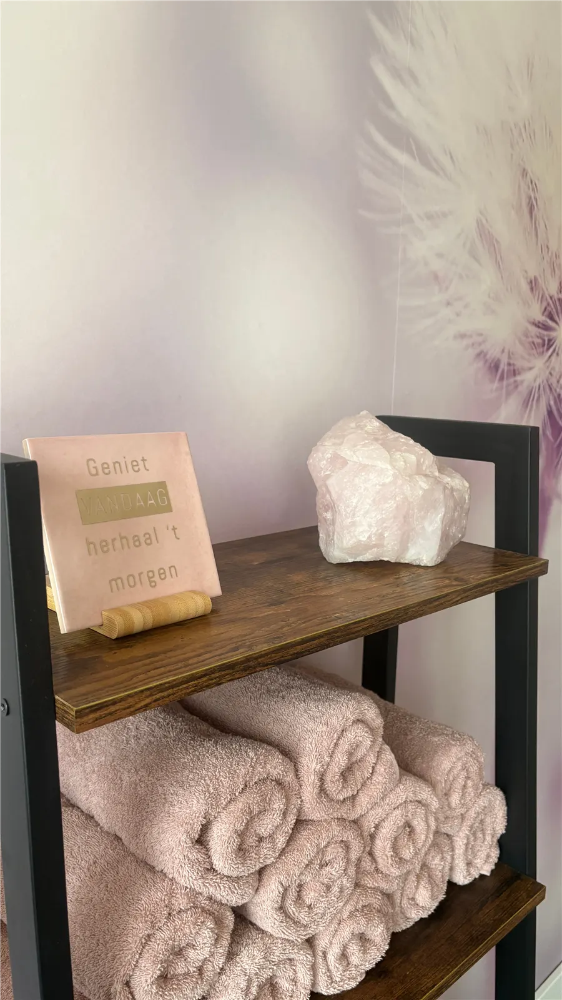
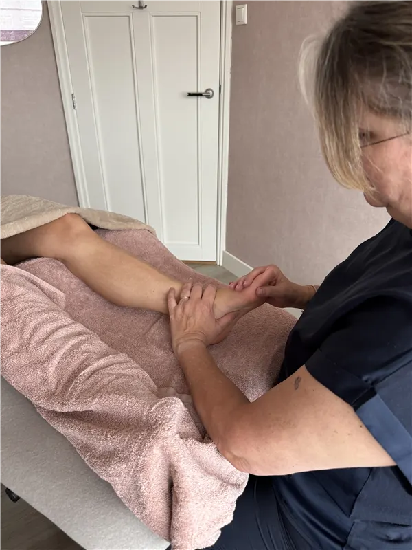
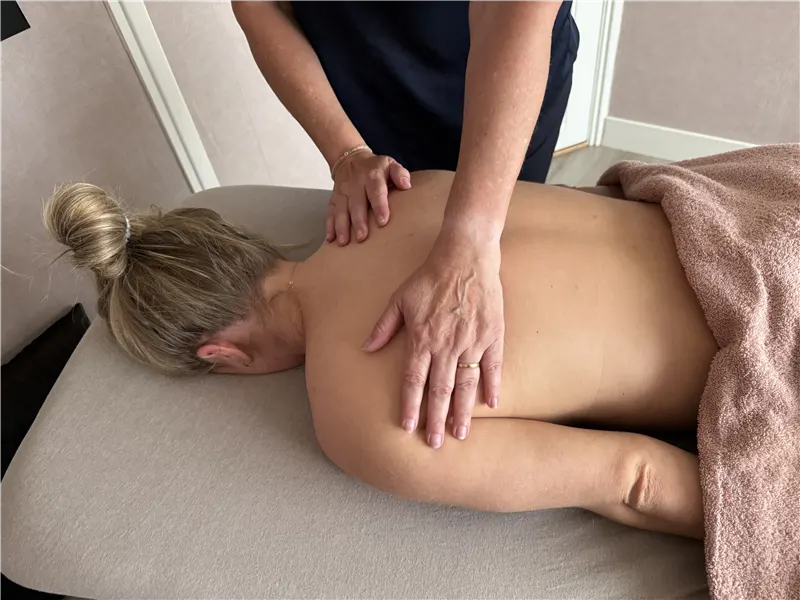

Cadeaubon
Je kiest zelf of je een bedrag cadeau geeft of een bepaalde behandeling. Vraag de cadeaubon online aan. Ophalen en betalen doe je in de praktijk.
Cadeaubon aanvragen (opent in een nieuw tabblad)
Een warme en rustige plek waar je even mag loslaten en opladen.

45 minuten€50
Voetreflextherapie is een holistische behandelvorm waarbij door middel van drukpunttechnieken op specifieke zones in de voet wordt gewerkt aan het herstellen van de balans in lichaam en geest. Via de reflexzones staat elk orgaan en lichaamssysteem in verbinding met de voet, waardoor gerichte druk bijdraagt aan ontspanning en het stimuleren van het zelfherstellend vermogen.
Voetreflextherapie kan ondersteuning bieden bij:

60 minuten€60
Holistische massage is een behandelmethode waarbij met verschillende massagetechnieken wordt gewerkt aan ontspanning, het verminderen van spanning en het ondersteunen van het natuurlijke herstelvermogen van het lichaam.
Holistische massage kan ondersteuning bieden bij:

Welkom bij Studio Anja, praktijk voor voetreflextherapie en holistische massage in Uden. Mijn naam is Anja van Lanen en mijn passie is om mensen te helpen meer rust, balans en ontspanning te ervaren. In mijn praktijk staat persoonlijke aandacht centraal. Of je nu komt met lichamelijke klachten, stress, vermoeidheid of simpelweg behoefte hebt aan een moment voor jezelf, iedere behandeling wordt afgestemd op wat jij op dat moment nodig hebt.
Studio Anja is een warme en rustige plek waar je even mag loslaten en opladen. Door mijn kennis van voetreflextherapie, holistische massage en voortdurende bijscholing bied ik behandelingen die gericht zijn op zowel ontspanning als het ondersteunen van het zelfherstellend vermogen van het lichaam. Mijn doel is dat je na iedere behandeling met meer rust in je hoofd, ontspanning in je lichaam en nieuwe energie de deur uitgaat.
Meer over mij en mijn praktijkEen behandeling bij Studio Anja is een aanvulling op reguliere zorg, nooit een vervanging. Ben je onder behandeling bij een arts of specialist? Meld dit dan bij de intake, zodat ik daar rekening mee kan houden.
Gun je iemand een moment van aandacht en ontspanning? Of kom je zelf regelmatig? Bij Studio Anja kan het allebei.
Je kiest zelf of je een bedrag cadeau geeft of een bepaalde behandeling. Vraag de cadeaubon online aan. Ophalen en betalen doe je in de praktijk.
Cadeaubon aanvragen (opent in een nieuw tabblad)Bij je behandeling krijg je gratis een strippenkaart. Elke behandeling telt mee.
Na 10 behandelingen krijg je 50% korting op je volgende behandeling.